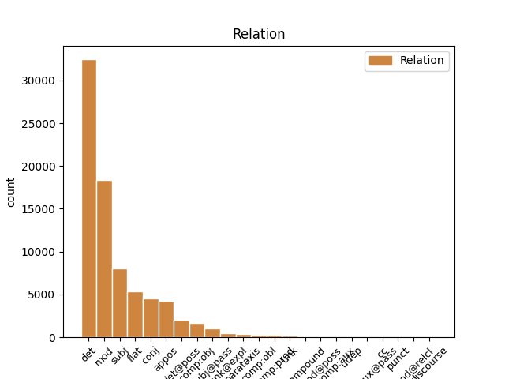
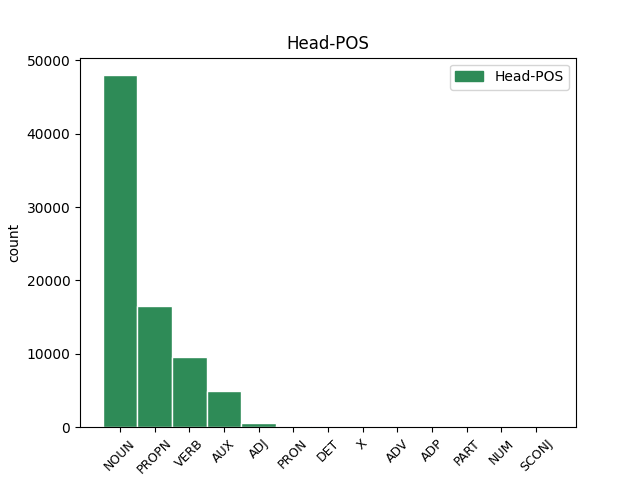
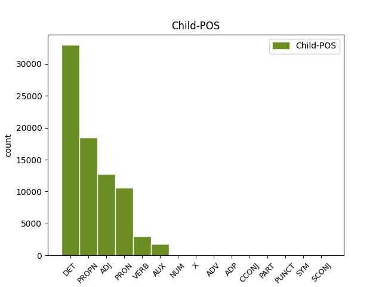

Distribution of features within this leaf



Agreement Rules sorted by frequency.
When the dependent token is None
1 Schon _ _ _ _ 0 _ _ _
2 früh _ _ _ _ 0 _ _ _
3 entwickelte _ _ _ _ 0 _ _ _
4 er _ _ _ _ 0 _ _ _
5 eine _ _ _ _ 0 _ _ _
6 Zuneigung _ _ _ _ 0 _ _ _
7 zu _ _ _ _ 0 _ _ _
8 den _ _ _ _ 0 _ _ _
9 Meteora _ _ _ _ 0 _ _ _
10 - _ _ _ _ 0 _ _ _
11 Klöstern _ _ _ _ 0 _ _ _
12 , _ _ _ _ 0 _ _ _
13 von _ _ _ _ 0 _ _ _
14 denen _ _ _ _ 0 _ _ _
15 einige _ _ _ _ 0 _ _ _
16 unter _ _ _ _ 0 _ _ _
17 der _ _ _ _ 0 _ _ _
18 Herrschaft _ _ _ _ 0 _ _ _
19 seines sein DET PPOSAT Case=Gen|Gender=Masc|Number=Sing|Poss=Yes 20 det@poss _ _
20 Vaters Vater NOUN NN Case=Gen|Gender=Masc|Number=Sing 0 _ _ _
21 entstanden _ _ _ _ 0 _ _ _
22 und _ _ _ _ 0 _ _ _
23 die _ _ _ _ 0 _ _ _
24 auch _ _ _ _ 0 _ _ _
25 er _ _ _ _ 0 _ _ _
26 finanziell _ _ _ _ 0 _ _ _
27 unterstützte _ _ _ _ 0 _ _ _
28 . _ _ _ _ 0 _ _ _
When the dependent token is None
1 Schon _ _ _ _ 0 _ _ _
2 früh _ _ _ _ 0 _ _ _
3 entwickelte _ _ _ _ 0 _ _ _
4 er _ _ _ _ 0 _ _ _
5 eine _ _ _ _ 0 _ _ _
6 Zuneigung _ _ _ _ 0 _ _ _
7 zu _ _ _ _ 0 _ _ _
8 den _ _ _ _ 0 _ _ _
9 Meteora Meteora PROPN NN Case=Dat|Gender=Masc|Number=Plur 0 _ _ _
10 - _ _ _ _ 0 _ _ _
11 Klöstern Kloster PROPN NN Case=Dat|Gender=Masc|Number=Plur 9 flat _ SpaceAfter=No
12 , _ _ _ _ 0 _ _ _
13 von _ _ _ _ 0 _ _ _
14 denen _ _ _ _ 0 _ _ _
15 einige _ _ _ _ 0 _ _ _
16 unter _ _ _ _ 0 _ _ _
17 der _ _ _ _ 0 _ _ _
18 Herrschaft _ _ _ _ 0 _ _ _
19 seines _ _ _ _ 0 _ _ _
20 Vaters _ _ _ _ 0 _ _ _
21 entstanden _ _ _ _ 0 _ _ _
22 und _ _ _ _ 0 _ _ _
23 die _ _ _ _ 0 _ _ _
24 auch _ _ _ _ 0 _ _ _
25 er _ _ _ _ 0 _ _ _
26 finanziell _ _ _ _ 0 _ _ _
27 unterstützte _ _ _ _ 0 _ _ _
28 . _ _ _ _ 0 _ _ _
When the dependent token is None
1 1702 _ _ _ _ 0 _ _ _
2 befanden _ _ _ _ 0 _ _ _
3 sich _ _ _ _ 0 _ _ _
4 dort _ _ _ _ 0 _ _ _
5 neben _ _ _ _ 0 _ _ _
6 der _ _ _ _ 0 _ _ _
7 Altstädter _ _ _ _ 0 _ _ _
8 Schule _ _ _ _ 0 _ _ _
9 elf _ _ _ _ 0 _ _ _
10 kleine klein ADJ ADJA Case=Nom|Gender=Neut|Number=Plur 11 mod _ _
11 Häuser Haus NOUN NN Case=Nom|Gender=Neut|Number=Plur 0 _ _ _
12 . _ _ _ _ 0 _ _ _
When the dependent token is None
1 Schon _ _ _ _ 0 _ _ _
2 früh _ _ _ _ 0 _ _ _
3 entwickelte _ _ _ _ 0 _ _ _
4 er _ _ _ _ 0 _ _ _
5 eine _ _ _ _ 0 _ _ _
6 Zuneigung _ _ _ _ 0 _ _ _
7 zu _ _ _ _ 0 _ _ _
8 den _ _ _ _ 0 _ _ _
9 Meteora _ _ _ _ 0 _ _ _
10 - _ _ _ _ 0 _ _ _
11 Klöstern _ _ _ _ 0 _ _ _
12 , _ _ _ _ 0 _ _ _
13 von _ _ _ _ 0 _ _ _
14 denen _ _ _ _ 0 _ _ _
15 einige _ _ _ _ 0 _ _ _
16 unter _ _ _ _ 0 _ _ _
17 der _ _ _ _ 0 _ _ _
18 Herrschaft _ _ _ _ 0 _ _ _
19 seines _ _ _ _ 0 _ _ _
20 Vaters _ _ _ _ 0 _ _ _
21 entstanden _ _ _ _ 0 _ _ _
22 und _ _ _ _ 0 _ _ _
23 die _ _ _ _ 0 _ _ _
24 auch _ _ _ _ 0 _ _ _
25 er er PRON PPER Case=Nom|Gender=Masc|Number=Sing|Person=3|PronType=Prs 27 subj _ _
26 finanziell _ _ _ _ 0 _ _ _
27 unterstützte unterstützen VERB VVFIN Mood=Ind|Number=Sing|Person=3|Tense=Past|VerbForm=Fin 0 _ _ _
28 . _ _ _ _ 0 _ _ _
When the dependent token is None
1 Die _ _ _ _ 0 _ _ _
2 fünfte _ _ _ _ 0 _ _ _
3 Single _ _ _ _ 0 _ _ _
4 , _ _ _ _ 0 _ _ _
5 die _ _ _ _ 0 _ _ _
6 Calling _ _ _ _ 0 _ _ _
7 You _ _ _ _ 0 _ _ _
8 ( _ _ _ _ 0 _ _ _
9 Remix _ _ _ _ 0 _ _ _
10 ) _ _ _ _ 0 _ _ _
11 heißt _ _ _ _ 0 _ _ _
12 , _ _ _ _ 0 _ _ _
13 gehörte _ _ _ _ 0 _ _ _
14 schon _ _ _ _ 0 _ _ _
15 zu _ _ _ _ 0 _ _ _
16 der _ _ _ _ 0 _ _ _
17 Premium _ _ _ _ 0 _ _ _
18 - _ _ _ _ 0 _ _ _
19 Edition Edition NOUN NN Case=Dat|Gender=Fem|Number=Sing 0 _ _ _
20 , _ _ _ _ 0 _ _ _
21 die _ _ _ _ 0 _ _ _
22 die _ _ _ _ 0 _ _ _
23 Band _ _ _ _ 0 _ _ _
24 2007 _ _ _ _ 0 _ _ _
25 unter _ _ _ _ 0 _ _ _
26 dem _ _ _ _ 0 _ _ _
27 Namen _ _ _ _ 0 _ _ _
28 Foiled _ _ _ _ 0 _ _ _
29 for _ _ _ _ 0 _ _ _
30 the _ _ _ _ 0 _ _ _
31 Last _ _ _ _ 0 _ _ _
32 Time _ _ _ _ 0 _ _ _
33 veröffentlichte veröffentlichen VERB VVFIN Mood=Ind|Number=Sing|Person=3|Tense=Past|VerbForm=Fin 19 mod _ SpaceAfter=No
34 . _ _ _ _ 0 _ _ _
When the dependent token is None
1 Davidsson _ _ _ _ 0 _ _ _
2 promovierte promovieren VERB VVFIN Mood=Ind|Number=Sing|Person=3|Tense=Past|VerbForm=Fin 0 _ _ _
3 1991 _ _ _ _ 0 _ _ _
4 mit _ _ _ _ 0 _ _ _
5 einer _ _ _ _ 0 _ _ _
6 Arbeit _ _ _ _ 0 _ _ _
7 über _ _ _ _ 0 _ _ _
8 Matthias _ _ _ _ 0 _ _ _
9 Weckmann _ _ _ _ 0 _ _ _
10 und _ _ _ _ 0 _ _ _
11 war sein AUX VAFIN Mood=Ind|Number=Sing|Person=3|Tense=Past|VerbForm=Fin 2 conj _ _
12 dadurch _ _ _ _ 0 _ _ _
13 der _ _ _ _ 0 _ _ _
14 erste _ _ _ _ 0 _ _ _
15 Absolvent _ _ _ _ 0 _ _ _
16 eines _ _ _ _ 0 _ _ _
17 wissenschaftlich _ _ _ _ 0 _ _ _
18 - _ _ _ _ 0 _ _ _
19 künstlerischen _ _ _ _ 0 _ _ _
20 Studiums _ _ _ _ 0 _ _ _
21 in _ _ _ _ 0 _ _ _
22 Schweden _ _ _ _ 0 _ _ _
23 . _ _ _ _ 0 _ _ _
When the dependent token is None
1 Er _ _ _ _ 0 _ _ _
2 machte _ _ _ _ 0 _ _ _
3 aus _ _ _ _ 0 _ _ _
4 der _ _ _ _ 0 _ _ _
5 Abtei _ _ _ _ 0 _ _ _
6 einen _ _ _ _ 0 _ _ _
7 echten _ _ _ _ 0 _ _ _
8 Bischofssitz _ _ _ _ 0 _ _ _
9 , _ _ _ _ 0 _ _ _
10 stockte _ _ _ _ 0 _ _ _
11 das _ _ _ _ 0 _ _ _
12 ganze _ _ _ _ 0 _ _ _
13 Konventsgebäude _ _ _ _ 0 _ _ _
14 mit _ _ _ _ 0 _ _ _
15 Kreuzgang _ _ _ _ 0 _ _ _
16 um _ _ _ _ 0 _ _ _
17 eine ein NUM ART Case=Acc|Gender=Fem|Number=Sing|NumType=Card 18 mod _ _
18 Etage Etage NOUN NN Case=Acc|Gender=Fem|Number=Sing 0 _ _ _
19 auf _ _ _ _ 0 _ _ _
20 und _ _ _ _ 0 _ _ _
21 baute _ _ _ _ 0 _ _ _
22 das _ _ _ _ 0 _ _ _
23 Dormitorium _ _ _ _ 0 _ _ _
24 in _ _ _ _ 0 _ _ _
25 dem _ _ _ _ 0 _ _ _
26 ersten _ _ _ _ 0 _ _ _
27 Stockwerk _ _ _ _ 0 _ _ _
28 des _ _ _ _ 0 _ _ _
29 Ostflügels _ _ _ _ 0 _ _ _
30 in _ _ _ _ 0 _ _ _
31 einen _ _ _ _ 0 _ _ _
32 großzügigen _ _ _ _ 0 _ _ _
33 Korridor _ _ _ _ 0 _ _ _
34 um _ _ _ _ 0 _ _ _
35 , _ _ _ _ 0 _ _ _
36 von _ _ _ _ 0 _ _ _
37 dem _ _ _ _ 0 _ _ _
38 die _ _ _ _ 0 _ _ _
39 Zimmer _ _ _ _ 0 _ _ _
40 mit _ _ _ _ 0 _ _ _
41 Alkoven _ _ _ _ 0 _ _ _
42 und _ _ _ _ 0 _ _ _
43 Oratorien _ _ _ _ 0 _ _ _
44 ( _ _ _ _ 0 _ _ _
45 Gebetsraum _ _ _ _ 0 _ _ _
46 ) _ _ _ _ 0 _ _ _
47 abgehen _ _ _ _ 0 _ _ _
48 , _ _ _ _ 0 _ _ _
49 deren _ _ _ _ 0 _ _ _
50 Türen _ _ _ _ 0 _ _ _
51 von _ _ _ _ 0 _ _ _
52 dekorierten _ _ _ _ 0 _ _ _
53 Trumeaus _ _ _ _ 0 _ _ _
54 getrennt _ _ _ _ 0 _ _ _
55 sind _ _ _ _ 0 _ _ _
56 . _ _ _ _ 0 _ _ _
When the dependent token is None
1 Der _ _ _ _ 0 _ _ _
2 Bühler _ _ _ _ 0 _ _ _
3 Oberlehrer _ _ _ _ 0 _ _ _
4 Otto Otto PROPN NE Case=Nom|Gender=Masc|Number=Sing 0 _ _ _
5 Greule _ _ _ _ 0 _ _ _
6 ( _ _ _ _ 0 _ _ _
7 † † X NE Case=Nom|Gender=Neut|Number=Sing 4 appos _ _
8 1970 _ _ _ _ 0 _ _ _
9 ) _ _ _ _ 0 _ _ _
10 verhalf _ _ _ _ 0 _ _ _
11 der _ _ _ _ 0 _ _ _
12 damals _ _ _ _ 0 _ _ _
13 größten _ _ _ _ 0 _ _ _
14 katholischen _ _ _ _ 0 _ _ _
15 Kirchenorgel _ _ _ _ 0 _ _ _
16 Badens _ _ _ _ 0 _ _ _
17 insbesondere _ _ _ _ 0 _ _ _
18 durch _ _ _ _ 0 _ _ _
19 sein _ _ _ _ 0 _ _ _
20 konzertantes _ _ _ _ 0 _ _ _
21 Spiel _ _ _ _ 0 _ _ _
22 zu _ _ _ _ 0 _ _ _
23 überregionaler _ _ _ _ 0 _ _ _
24 Berühmtheit _ _ _ _ 0 _ _ _
25 . _ _ _ _ 0 _ _ _
When the dependent token is None
1 Rääts Rääts ADV NN Case=Nom|Gender=Neut|Number=Sing 6 subj _ _
2 un _ _ _ _ 0 _ _ _
3 links _ _ _ _ 0 _ _ _
4 vum _ _ _ _ 0 _ _ _
5 Bahndamm _ _ _ _ 0 _ _ _
6 beschreibt beschreiben VERB VVFIN Mood=Ind|Number=Sing|Person=3|Tense=Pres|VerbForm=Fin 0 _ _ _
7 die _ _ _ _ 0 _ _ _
8 nächtliche _ _ _ _ 0 _ _ _
9 Bahnfahrt _ _ _ _ 0 _ _ _
10 eines _ _ _ _ 0 _ _ _
11 Mannes _ _ _ _ 0 _ _ _
12 , _ _ _ _ 0 _ _ _
13 der _ _ _ _ 0 _ _ _
14 in _ _ _ _ 0 _ _ _
15 Gedanken _ _ _ _ 0 _ _ _
16 noch _ _ _ _ 0 _ _ _
17 bei _ _ _ _ 0 _ _ _
18 seiner _ _ _ _ 0 _ _ _
19 Liebsten _ _ _ _ 0 _ _ _
20 und _ _ _ _ 0 _ _ _
21 der _ _ _ _ 0 _ _ _
22 gestrigen _ _ _ _ 0 _ _ _
23 gemeinsamen _ _ _ _ 0 _ _ _
24 Nacht _ _ _ _ 0 _ _ _
25 ist _ _ _ _ 0 _ _ _
26 . _ _ _ _ 0 _ _ _
When the dependent token is None
1 In _ _ _ _ 0 _ _ _
2 dem _ _ _ _ 0 _ _ _
3 dritten _ _ _ _ 0 _ _ _
4 Quartal _ _ _ _ 0 _ _ _
5 2008 _ _ _ _ 0 _ _ _
6 waren _ _ _ _ 0 _ _ _
7 Wien _ _ _ _ 0 _ _ _
8 ( _ _ _ _ 0 _ _ _
9 1.681.469 _ _ _ _ 0 _ _ _
10 Einwohner _ _ _ _ 0 _ _ _
11 ) _ _ _ _ 0 _ _ _
12 , _ _ _ _ 0 _ _ _
13 Graz _ _ _ _ 0 _ _ _
14 ( _ _ _ _ 0 _ _ _
15 261.540 _ _ _ _ 0 _ _ _
16 Einwohner _ _ _ _ 0 _ _ _
17 ) _ _ _ _ 0 _ _ _
18 , _ _ _ _ 0 _ _ _
19 Linz _ _ _ _ 0 _ _ _
20 ( _ _ _ _ 0 _ _ _
21 189.528 _ _ _ _ 0 _ _ _
22 Einwohner _ _ _ _ 0 _ _ _
23 ) _ _ _ _ 0 _ _ _
24 , _ _ _ _ 0 _ _ _
25 Salzburg _ _ _ _ 0 _ _ _
26 ( _ _ _ _ 0 _ _ _
27 150.378 _ _ _ _ 0 _ _ _
28 Einwohner _ _ _ _ 0 _ _ _
29 ) _ _ _ _ 0 _ _ _
30 und _ _ _ _ 0 _ _ _
31 Innsbruck _ _ _ _ 0 _ _ _
32 ( _ _ _ _ 0 _ _ _
33 118.902 _ _ _ _ 0 _ _ _
34 Einwohner _ _ _ _ 0 _ _ _
35 ) _ _ _ _ 0 _ _ _
36 die _ _ _ _ 0 _ _ _
37 größten _ _ _ _ 0 _ _ _
38 Städte _ _ _ _ 0 _ _ _
39 in _ _ _ _ 0 _ _ _
40 Österreich Österreich PROPN NE Case=Dat|Gender=Neut|Number=Sing 0 _ _ _
41 ( _ _ _ _ 0 _ _ _
42 lt. lt. ADP ADJA Case=Nom|Gender=Fem|Number=Sing 40 udep _ _
43 Statistik _ _ _ _ 0 _ _ _
44 Austria _ _ _ _ 0 _ _ _
45 ) _ _ _ _ 0 _ _ _
46 . _ _ _ _ 0 _ _ _
When the dependent token is None
1 In _ _ _ _ 0 _ _ _
2 dieser _ _ _ _ 0 _ _ _
3 Zeit _ _ _ _ 0 _ _ _
4 war _ _ _ _ 0 _ _ _
5 Campbell _ _ _ _ 0 _ _ _
6 nicht _ _ _ _ 0 _ _ _
7 nur _ _ _ _ 0 _ _ _
8 wichtiger _ _ _ _ 0 _ _ _
9 Teil _ _ _ _ 0 _ _ _
10 von _ _ _ _ 0 _ _ _
11 Dylans _ _ _ _ 0 _ _ _
12 Live _ _ _ _ 0 _ _ _
13 - _ _ _ _ 0 _ _ _
14 Band _ _ _ _ 0 _ _ _
15 , _ _ _ _ 0 _ _ _
16 sondern _ _ _ _ 0 _ _ _
17 auch _ _ _ _ 0 _ _ _
18 Musiker _ _ _ _ 0 _ _ _
19 auf _ _ _ _ 0 _ _ _
20 dem _ _ _ _ 0 _ _ _
21 Studioalbum _ _ _ _ 0 _ _ _
22 " _ _ _ _ 0 _ _ _
23 Love _ _ _ _ 0 _ _ _
24 and _ _ _ _ 0 _ _ _
25 Theft _ _ _ _ 0 _ _ _
26 " _ _ _ _ 0 _ _ _
27 aus _ _ _ _ 0 _ _ _
28 dem _ _ _ _ 0 _ _ _
29 Jahr _ _ _ _ 0 _ _ _
30 2001 _ _ _ _ 0 _ _ _
31 und _ _ _ _ 0 _ _ _
32 dem _ _ _ _ 0 _ _ _
33 Dylan _ _ _ _ 0 _ _ _
34 - _ _ _ _ 0 _ _ _
35 Film _ _ _ _ 0 _ _ _
36 Masked _ _ _ _ 0 _ _ _
37 and and CCONJ NE Case=Dat|Gender=Masc|Number=Sing 38 cc _ _
38 Anonymous Anonymous PROPN NE Case=Dat|Gender=Masc|Number=Sing 0 _ _ _
39 aus _ _ _ _ 0 _ _ _
40 dem _ _ _ _ 0 _ _ _
41 Jahr _ _ _ _ 0 _ _ _
42 2003 _ _ _ _ 0 _ _ _
43 . _ _ _ _ 0 _ _ _
When the dependent token is None
1 Diese _ _ _ _ 0 _ _ _
2 interdisziplinär _ _ _ _ 0 _ _ _
3 breit _ _ _ _ 0 _ _ _
4 vernetzte _ _ _ _ 0 _ _ _
5 hermeneutische _ _ _ _ 0 _ _ _
6 Spirale _ _ _ _ 0 _ _ _
7 ( _ _ _ _ 0 _ _ _
8 Theologie _ _ _ _ 0 _ _ _
9 → _ _ _ _ 0 _ _ _
10 Exegese _ _ _ _ 0 _ _ _
11 → → PUNCT NE Case=Nom|Gender=Fem|Number=Sing 13 punct _ _
12 exegetische _ _ _ _ 0 _ _ _
13 Theologie Theologie NOUN NN Case=Nom|Gender=Fem|Number=Sing 0 _ _ _
14 ) _ _ _ _ 0 _ _ _
15 lässt _ _ _ _ 0 _ _ _
16 neue _ _ _ _ 0 _ _ _
17 Erkenntnisse _ _ _ _ 0 _ _ _
18 aus _ _ _ _ 0 _ _ _
19 der _ _ _ _ 0 _ _ _
20 Heiligen _ _ _ _ 0 _ _ _
21 Schrift _ _ _ _ 0 _ _ _
22 wachsen _ _ _ _ 0 _ _ _
23 , _ _ _ _ 0 _ _ _
24 welche _ _ _ _ 0 _ _ _
25 die _ _ _ _ 0 _ _ _
26 postscriptuelle _ _ _ _ 0 _ _ _
27 Schriftwerdung _ _ _ _ 0 _ _ _
28 bereichern _ _ _ _ 0 _ _ _
29 . _ _ _ _ 0 _ _ _
When the dependent token is None
1 Clark _ _ _ _ 0 _ _ _
2 ist _ _ _ _ 0 _ _ _
3 damit _ _ _ _ 0 _ _ _
4 der _ _ _ _ 0 _ _ _
5 erste _ _ _ _ 0 _ _ _
6 Preisträger _ _ _ _ 0 _ _ _
7 aus _ _ _ _ 0 _ _ _
8 dem _ _ _ _ 0 _ _ _
9 nicht nicht PART ADJA Case=Dat|Gender=Neut|Number=Sing|Polarity=Neg 11 mod _ _
10 - _ _ _ _ 0 _ _ _
11 deutschsprachigen deutschsprachig ADJ ADJA Case=Dat|Gender=Neut|Number=Sing 0 _ _ _
12 Ausland _ _ _ _ 0 _ _ _
13 . _ _ _ _ 0 _ _ _
When the dependent token is None
1 Von _ _ _ _ 0 _ _ _
2 den _ _ _ _ 0 _ _ _
3 Bewohnern _ _ _ _ 0 _ _ _
4 sind sein AUX VAFIN Mood=Ind|Number=Plur|Person=3|Tense=Pres|VerbForm=Fin 0 _ _ _
5 84.2 _ _ _ _ 0 _ _ _
6 % % SYM NN Case=Nom|Gender=Neut|Number=Plur 4 subj _ _
7 französischsprachig _ _ _ _ 0 _ _ _
8 , _ _ _ _ 0 _ _ _
9 9.2 _ _ _ _ 0 _ _ _
10 % _ _ _ _ 0 _ _ _
11 deutschsprachig _ _ _ _ 0 _ _ _
12 und _ _ _ _ 0 _ _ _
13 2.9 _ _ _ _ 0 _ _ _
14 % _ _ _ _ 0 _ _ _
15 italienischsprachig _ _ _ _ 0 _ _ _
16 ( _ _ _ _ 0 _ _ _
17 Stand _ _ _ _ 0 _ _ _
18 2000 _ _ _ _ 0 _ _ _
19 ) _ _ _ _ 0 _ _ _
20 . _ _ _ _ 0 _ _ _
When the dependent token is None
1 Später _ _ _ _ 0 _ _ _
2 wurde werden AUX VAFIN Mood=Ind|Number=Sing|Person=3|Tense=Past|VerbForm=Fin|Voice=Pass 0 _ _ _
3 noch _ _ _ _ 0 _ _ _
4 nachgeeicht _ _ _ _ 0 _ _ _
5 indem indem SCONJ ADJA Case=Dat|Gender=Neut|Number=Sing 2 conj _ _
6 Material _ _ _ _ 0 _ _ _
7 aus _ _ _ _ 0 _ _ _
8 dem _ _ _ _ 0 _ _ _
9 Sockel _ _ _ _ 0 _ _ _
10 abgekratzt _ _ _ _ 0 _ _ _
11 wurde _ _ _ _ 0 _ _ _
12 oder _ _ _ _ 0 _ _ _
13 Metallfäden _ _ _ _ 0 _ _ _
14 , _ _ _ _ 0 _ _ _
15 Glasstückchen _ _ _ _ 0 _ _ _
16 oder _ _ _ _ 0 _ _ _
17 Bleiklumpen _ _ _ _ 0 _ _ _
18 angebracht _ _ _ _ 0 _ _ _
19 wurden _ _ _ _ 0 _ _ _
20 . _ _ _ _ 0 _ _ _
Disagree Examples:
1 Eine _ _ _ _ 0 _ _ _
2 Stunde _ _ _ _ 0 _ _ _
3 später _ _ _ _ 0 _ _ _
4 gab geben VERB VVFIN Mood=Ind|Number=Sing|Person=3|Tense=Past|VerbForm=Fin 0 _ _ _
5 man _ _ _ _ 0 _ _ _
6 uns wir PRON PPER Case=Dat|Number=Plur|Person=1|PronType=Prs 4 comp:obl _ _
7 dann _ _ _ _ 0 _ _ _
8 endlich _ _ _ _ 0 _ _ _
9 einen _ _ _ _ 0 _ _ _
10 Tisch _ _ _ _ 0 _ _ _
11 , _ _ _ _ 0 _ _ _
12 der _ _ _ _ 0 _ _ _
13 allerdings _ _ _ _ 0 _ _ _
14 noch _ _ _ _ 0 _ _ _
15 nicht _ _ _ _ 0 _ _ _
16 einmal _ _ _ _ 0 _ _ _
17 abgeräumt _ _ _ _ 0 _ _ _
18 war _ _ _ _ 0 _ _ _
19 . _ _ _ _ 0 _ _ _
1 Das _ _ _ _ 0 _ _ _
2 war _ _ _ _ 0 _ _ _
3 der _ _ _ _ 0 _ _ _
4 Punkt Punkt NOUN NN Case=Nom|Gender=Masc|Number=Sing 0 _ _ _
5 an _ _ _ _ 0 _ _ _
6 dem _ _ _ _ 0 _ _ _
7 wir _ _ _ _ 0 _ _ _
8 hätten haben AUX VAFIN Mood=Sub|Number=Plur|Person=1|Tense=Past|VerbForm=Fin 4 mod@relcl _ _
9 gehen _ _ _ _ 0 _ _ _
10 sollen _ _ _ _ 0 _ _ _
11 . _ _ _ _ 0 _ _ _
1 Aber _ _ _ _ 0 _ _ _
2 da _ _ _ _ 0 _ _ _
3 es es PRON PPER Case=Nom|Gender=Neut|Number=Sing|Person=3|PronType=Prs 13 subj _ _
4 mittlerweile _ _ _ _ 0 _ _ _
5 nur _ _ _ _ 0 _ _ _
6 noch _ _ _ _ 0 _ _ _
7 3 _ _ _ _ 0 _ _ _
8 Wochen _ _ _ _ 0 _ _ _
9 bis _ _ _ _ 0 _ _ _
10 zu _ _ _ _ 0 _ _ _
11 der _ _ _ _ 0 _ _ _
12 Hochzeit _ _ _ _ 0 _ _ _
13 waren sein AUX VAFIN Mood=Ind|Number=Plur|Person=3|Tense=Past|VerbForm=Fin 0 _ _ _
14 und _ _ _ _ 0 _ _ _
15 wir _ _ _ _ 0 _ _ _
16 keinen _ _ _ _ 0 _ _ _
17 anderen _ _ _ _ 0 _ _ _
18 Konditor _ _ _ _ 0 _ _ _
19 wussten _ _ _ _ 0 _ _ _
20 , _ _ _ _ 0 _ _ _
21 blieben _ _ _ _ 0 _ _ _
22 wir _ _ _ _ 0 _ _ _
23 . _ _ _ _ 0 _ _ _
1 Das der DET ART Case=Nom|Definite=Def|Gender=Neut|Number=Sing|PronType=Art 3 det _ _
2 einzig _ _ _ _ 0 _ _ _
3 positive positiv NOUN ADJA Case=Acc|Gender=Masc|Number=Plur 0 _ _ _
4 was _ _ _ _ 0 _ _ _
5 man _ _ _ _ 0 _ _ _
6 sagen _ _ _ _ 0 _ _ _
7 kann _ _ _ _ 0 _ _ _
8 war _ _ _ _ 0 _ _ _
9 das _ _ _ _ 0 _ _ _
10 sie _ _ _ _ 0 _ _ _
11 geschmeckt _ _ _ _ 0 _ _ _
12 hat _ _ _ _ 0 _ _ _
13 , _ _ _ _ 0 _ _ _
14 aber _ _ _ _ 0 _ _ _
15 rein _ _ _ _ 0 _ _ _
16 optisch _ _ _ _ 0 _ _ _
17 hätte _ _ _ _ 0 _ _ _
18 es _ _ _ _ 0 _ _ _
19 meine _ _ _ _ 0 _ _ _
20 kleine _ _ _ _ 0 _ _ _
21 Schwester _ _ _ _ 0 _ _ _
22 wirklich _ _ _ _ 0 _ _ _
23 besser _ _ _ _ 0 _ _ _
24 gemacht _ _ _ _ 0 _ _ _
25 ! _ _ _ _ 0 _ _ _
1 Das _ _ _ _ 0 _ _ _
2 einzig _ _ _ _ 0 _ _ _
3 positive positiv NOUN ADJA Case=Acc|Gender=Masc|Number=Plur 0 _ _ _
4 was _ _ _ _ 0 _ _ _
5 man _ _ _ _ 0 _ _ _
6 sagen _ _ _ _ 0 _ _ _
7 kann können AUX VMFIN Mood=Ind|Number=Sing|Person=3|Tense=Pres|VerbForm=Fin 3 mod _ _
8 war _ _ _ _ 0 _ _ _
9 das _ _ _ _ 0 _ _ _
10 sie _ _ _ _ 0 _ _ _
11 geschmeckt _ _ _ _ 0 _ _ _
12 hat _ _ _ _ 0 _ _ _
13 , _ _ _ _ 0 _ _ _
14 aber _ _ _ _ 0 _ _ _
15 rein _ _ _ _ 0 _ _ _
16 optisch _ _ _ _ 0 _ _ _
17 hätte _ _ _ _ 0 _ _ _
18 es _ _ _ _ 0 _ _ _
19 meine _ _ _ _ 0 _ _ _
20 kleine _ _ _ _ 0 _ _ _
21 Schwester _ _ _ _ 0 _ _ _
22 wirklich _ _ _ _ 0 _ _ _
23 besser _ _ _ _ 0 _ _ _
24 gemacht _ _ _ _ 0 _ _ _
25 ! _ _ _ _ 0 _ _ _